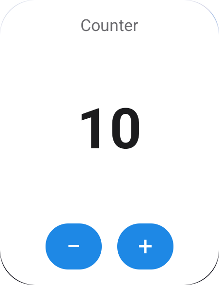

أول widget ليك في 6 خطواتYour first widget in 6 steps
هتثبّت الباكدج، وتجهّز المشروع مرة واحدة بس، وبعد كده كل widget جديدة هتبقى class في Dart وأمر واحد.
Install the packages and set the project up once. After that, every new widget is one Dart class and one command.
المتطلباتRequirements
محتاج Xcode متسطّب علشان تبني لـ iOS، بس مش هتحتاج تفتحه.
Xcode must be installed to build for iOS, but you won't need to open it.
ثبّت الباكدجاتInstall the packages
الباكدج الأساسية بتتحط في dependencies، والـ generator و build_runner في dev_dependencies.
The main package goes in dependencies; the generator and build_runner go in dev_dependencies.
flutter pub add flutter_native_widget
flutter pub add dev:flutter_native_widget_gen dev:build_runnerdependencies:
flutter_native_widget: ^0.1.0
dev_dependencies:
flutter_native_widget_gen: ^0.1.0
build_runner: ^2.4.0جهّز المشروع (مرة واحدة)Set up the project (once)
الأمر init بيعمل الحاجات دي لوحده:
init does all of this for you:
- بيعمل ملف
flutter_native_widget.yaml - بيضيف Widget Extension اسمه
FNWWidgetsلمشروع Xcode، ومعاه الـ build phases والـ embedding والـ signing (بيتنسخ من الأبليكيشن) والـ App Group - بيسجّل الـ callbacks في
AppDelegate.swift - بيحفظ نسخة احتياطي:
project.pbxproj.fnw-backup - أندرويد مش محتاج أي تعديل في Gradle
- Creates
flutter_native_widget.yaml - Adds the
FNWWidgetsWidget Extension to Xcode: build phases, embedding, signing copied from your app, App Group - Registers callbacks in
AppDelegate.swift - Keeps a backup:
project.pbxproj.fnw-backup - Android needs no Gradle changes
dart run flutter_native_widget_gen init# flutter_native_widget settings.
ios:
# Shared storage between the app and the widget extension.
# Must be enabled for your team (Xcode's automatic signing does this).
app_group: group.com.example.app
# deployment_target: '16.0'
# android:
# namespace: com.example.app # detected from android/app/build.gradle
# main_activity: com.example.app.MainActivityاكتب الـ widgetWrite the widget
ممكن تكتبها في أي ملف تحت lib/. الـ part لازم يكون بنفس اسم الملف وآخره .fnw.dart.
Any file under lib/ works. The part must match the file name, ending in .fnw.dart.
fields: الداتا اللي بتتغير، وكل حقل بيبقى باراميتر typed.{count}جوه النص بتتبدّل بقيمة الحقل.- الـ layout لازم يبقى
const.
fields: the data that changes; each becomes a typed parameter.{count}inside text is replaced with the field's value.- The layout must be
const.
import 'package:flutter_native_widget/flutter_native_widget.dart';
part 'widgets.fnw.dart';
@HomeScreenWidget(
displayName: 'Counter',
description: 'Tap + and − right on the home screen',
sizes: [NWSize.small],
fields: [NWField.integer('count')],
layout: NWColumn(
mainAxisAlignment: NWMainAxisAlignment.spaceBetween,
children: [
NWText('Counter', style: NWTextStyle(size: 13, color: NWColor.secondaryLabel)),
NWText('{count}', style: NWTextStyle(size: 44, weight: NWFontWeight.bold)),
NWRow(spacing: 12, children: [
NWButton(action: NWAction.decrement('count', min: 0), child: NWText('−')),
NWButton(action: NWAction.increment('count', max: 99), child: NWText('+')),
]),
],
),
onTap: NWAction.openApp('/counter'),
)
class Counter {}ولّد الكودGenerate the code
أمر واحد بيكتب الـ Dart والـ Kotlin والـ Swift. استخدم watch وانت شغّال، وهو هيعيد التوليد مع كل حفظ.
One command writes the Dart, Kotlin and Swift. Use watch while you work to regenerate on every save.
بعد كده لازم تعمل build كامل للأبليكيشن (مش hot reload)، علشان الكود الـ native اتغيّر.
Then do a full rebuild of the app (not hot reload): the native code changed.
dart run build_runner build # once
dart run build_runner watch # or: keep regeneratingشغّل الـ runtime في mainStart the runtime in main
initializeHomeWidgets() بيتولّد في lib/home_widgets.g.dart. هو اللي بيسجّل الـ widgets والـ App Group والـ callbacks.
initializeHomeWidgets() is generated in lib/home_widgets.g.dart. It registers the widgets, the App Group and the callbacks.
import 'package:flutter/material.dart';
import 'home_widgets.g.dart';
Future<void> main() async {
WidgetsFlutterBinding.ensureInitialized();
await initializeHomeWidgets();
runApp(const MyApp());
}شغّل وضيف الـ widgetRun it and add the widget
- أندرويد: اعمل دوسة طويلة على الشاشة الرئيسية، واختار Widgets، وبعدين اسم الأبليكيشن. أو اطلب الإضافة من جوه الأبليكيشن بـ
HomeWidget.requestPinWidget. - iOS: اعمل دوسة طويلة على الشاشة الرئيسية، ودوس Edit، وبعدين Add Widget، واختار الأبليكيشن.
- Android: long-press the home screen → Widgets → your app. Or ask from inside the app with
HomeWidget.requestPinWidget. - iOS: long-press the home screen → Edit → Add Widget → your app.

flutter runimport 'package:home_widget/home_widget.dart';
final spec = homeWidgetSpecs.firstWhere((s) => s.name == CounterWidget.name);
await HomeWidget.requestPinWidget(qualifiedAndroidName: spec.androidProvider);ابعت داتا للـ widgetSend data to the widget
لكل widget بيتولّد class اسمه <Name>Widget، وكل باراميتر فيه typed حسب الحقل بتاعه.
Each widget gets a generated <Name>Widget class, typed from its fields.
// Write values and redraw
await CounterWidget.save(count: 5);
// Write without redrawing yet (batch several saves)
await CounterWidget.save(count: 6, update: false);
await CounterWidget.update();
// Read (falls back to the field's initial value)
final data = await CounterWidget.read();
print(data.count);
// Remove everything this widget stored
await CounterWidget.clear();| الحقلField | النوع في DartDart type |
|---|---|
NWField.string('title') | String |
NWField.integer('count') | int |
NWField.decimal('progress') | double |
NWField.boolean('done') | bool |
NWField.dateTime('at') | DateTime |
NWField.image('cover') | مسار ملف، و renderCover(widget)file path, plus renderCover(widget) |
repeat: 4 | List<T> (بيتخزن title0..title3)(stored as title0..title3) |
حاجات أكترGoing further
كل حاجة من دول ليها مثال كامل في صفحة الأمثلة، فيه screenshot وشرح الداتا بتتنقل إزاي.
Each of these has a full example on the Examples page, with a screenshot and how its data flows.
أزرار من غير فتح الأبليكيشنButtons that don't open the app
NWAction.increment('count', max: 99)
NWAction.decrement('count', min: 0)
NWAction.toggle('done0')
NWAction.set('glasses', '0')
NWAction.cycle('cup', ['250 ml', '330 ml', '500 ml'])Dart في الـ backgroundDart in the background
NWButton(action: NWAction.callback('next'), child: NWText('⏭'))
@WidgetCallback(widget: 'NowPlaying')
Future<void> onMusicButton(WidgetEvent event) async {
if (event.name == 'next') {
await NowPlayingWidget.save(title: 'Next song');
}
}قيم بتتغير في مواعيدValues that change on schedule
await PrayerTimesWidget.saveTimeline([
PrayerTimesTimelineEntry(dhuhr, next: 'العصر', nextAt: asr),
PrayerTimesTimelineEntry(asr, next: 'المغرب', nextAt: maghrib),
]);أي Flutter widget كصورةAny Flutter widget as an image
fields: [NWField.image('chart')],
layout: NWImage(field: 'chart'),
await StepsWidget.renderChart(
MyChart(steps),
size: const Size(320, 110),
);داتا من النتData from the web
refresh: NWRefresh(
url: 'https://wttr.in/{city}?format=j1',
every: Duration(minutes: 30),
values: {'temp': 'current_condition.0.temp_C'},
),المرجع السريعQuick reference
| العنصرElement | بيعمل إيهWhat it does |
|---|---|
NWColumn, NWRow | يرصّوا العناصر جنب بعض؛ mainAxisAlignment و crossAxisAlignment و spacing. الصفوف بتمشي مع اتجاه RTL.Lay out children; mainAxisAlignment, crossAxisAlignment, spacing. Rows follow RTL. |
NWStack | عناصر فوق بعض.Children on top of each other. |
NWBox | مقاس، padding، color أو gradient، border، radius، expand.Size, padding, color or gradient, border, radius, expand. |
NWSpacer | بياخد المساحة الفاضية.Takes the remaining space. |
NWText, NWRichText | نص فيه {field}، أو أجزاء (NWSpan) كل جزء ليه شكله.Text with {field}, or NWSpan parts with their own style. |
NWImage | صورة من حقل image.An image from an image field. |
NWIcon | Material icon على أندرويد، والـ SF Symbol اللي يقابلها على iOS.A Material icon on Android, the matching SF Symbol on iOS. |
NWProgress | Bar من حقل رقمي قيمته بين 0 و max. ولو استخدمت .circular بيرسم حلقة.A bar from a number field between 0 and max; .circular draws a ring. |
NWClock, NWAnalogClock, NWDateText | الساعة والتاريخ، والنظام هو اللي بيحدّثهم.Time and date, kept current by the system. |
NWTimer | عدّاد حي بيعد لحد حقل dateTime (أو بيعد منه).Live countdown to (or count-up from) a dateTime field. |
NWButton | بيخلّي العنصر اللي جواه يتداس، ومعاه NWAction.Makes its child tappable with an NWAction. |
NWIf | بيعرض child أو orElse حسب NWCondition: isTrue و isFalse و isEmpty و notEmpty و equals و greaterThan.child or orElse by an NWCondition: isTrue, isFalse, isEmpty, notEmpty, equals, greaterThan. |
NWRepeat, NWList | بيكرّروا عنصر، وعلامة # في المفاتيح بتتبدّل برقم العنصر. NWList بتعمل scroll على Android 12+.Repeat a child; # in keys becomes the index. NWList scrolls on Android 12+. |
المرجع الكامل لكل باراميتر موجود على pub.dev.
The full API reference is on pub.dev.
CLI
dart run flutter_native_widget_gen init # one-time project setup
dart run flutter_native_widget_gen sync # rewrite native code from the last build
dart run flutter_native_widget_gen doctor # check that everything is wired up
dart run flutter_native_widget_gen clean # remove everything it addedالملفات المتولّدةGenerated files
اعمل لها commit زي أي كود تاني. الأداة مابتعدّلش أي حاجة برا الملفات دي أو برا الـ markers بتاعتها.
Commit them like any other source. Nothing outside these files and markers is touched.
| فينWhere | إيهWhat |
|---|---|
lib/**.fnw.dart | الـ classes الـ typed (part files)Typed widget classes (part files) |
lib/home_widgets.g.dart | الـ specs والـ callbacks و initializeHomeWidgets()Specs, callbacks, initializeHomeWidgets() |
android/app/src/main/kotlin/<ns>/fnw/FnwWidgets.kt | الـ providers والـ runtime الـ nativeProviders and the native runtime |
android/app/src/main/res/*/fnw_* | layouts، widget info، ألوان، drawables، stringsLayouts, widget info, colors, drawables, strings |
AndroidManifest.xml | receivers بين markers flutter_native_widgetReceivers between flutter_native_widget markers |
ios/FNWWidgets/ | SwiftUI widgets، Info.plist، entitlementsSwiftUI widgets, Info.plist, entitlements |
ios/Runner/FNWCallbackIntent.swift | App Intent بيشغّل الـ Dart callbacksApp Intent that runs Dart callbacks |
مشاكل شائعةTroubleshooting
الـ widget مش بتتحدّث بعد ما بعمل saveThe widget doesn't update after save
اتأكد إنك ناديت initializeHomeWidgets() في main، وإنك ما بعتّش update: false من غير ما تنادي update() بعدها. لو المشكلة على iOS، شغّل doctor علشان تتأكد من الـ App Group.
Make sure initializeHomeWidgets() runs in main, and that you didn't pass update: false without calling update() later. On iOS, run doctor to check the App Group.
غيّرت الـ layout ومفيش حاجة اتغيّرتI changed the layout and nothing changed
شغّل build_runner تاني واعمل build كامل للأبليكيشن. الـ hot reload مابيوصلش للكود الـ native.
Run build_runner again and fully rebuild the app. Hot reload doesn't reach native code.
خطأ إن الـ layout مش const أو إن العنصر مش معروفError: layout isn't const or element is unknown
الـ generator بيفهم عناصر NW* بس، والـ const top-level variables. مينفعش تعمل subclass لـ nodes، ولا تستخدم functions بترجع nodes.
The generator only understands NW* elements and top-level const variables. No node subclasses or functions returning nodes.
اسم الحقل بيطلّع errorA field name causes an error
فيه أسماء محجوزة، زي name و update و startsAt، والكلمات المحجوزة في Dart، لأنها بتتعارض مع الكود المتولّد. الـ generator هيقولك على الاسم وقت الـ build.
Some names are reserved (name, update, startsAt, Dart keywords) because they clash with generated code. The generator tells you at build time.
الأزرار على iOS بتفتح الأبليكيشنButtons open the app on iOS
ده العادي على iOS 16، لأن الأزرار اللي بتشتغل جوه الـ widget محتاجة iOS 17+. الأبليكيشن بيطبّق الأكشن لما يفتح.
Expected on iOS 16: interactive buttons need iOS 17+. The app applies the action when it opens.
عايز أشيل الباكدجI want to remove the package
شغّل dart run flutter_native_widget_gen clean، وهو هيشيل الـ extension والملفات المتولّدة والـ markers.
dart run flutter_native_widget_gen clean removes the extension, generated files and markers.